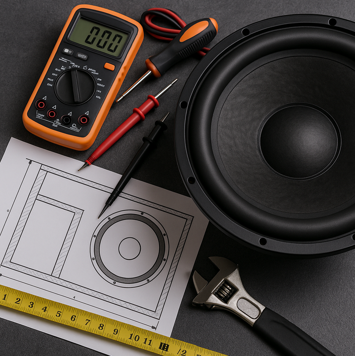

Welcome to Calculated Car Audio Creations
Here at Calculated Car Audio Creations, we aim to help car audio enthusiasts design and tune their systems to perfection. Whether you’re a first-time DIYer or a professional installer, our goal is to make your audio projects easier and more accurate.
Services
- Subwoofer box volume and tuning guidance
- Gain setting and RMS voltage calculations
- Sound deadening and installation instructions
Mission Statement
We aim to empower everyday car audio enthusiasts with the knowledge and tools to design, tune, and perfect their own systems without guesswork or confusion.
Explore the Site
Use the navigation above to learn more about car audio design, explore useful calculators, and read about best practices for building your next setup.